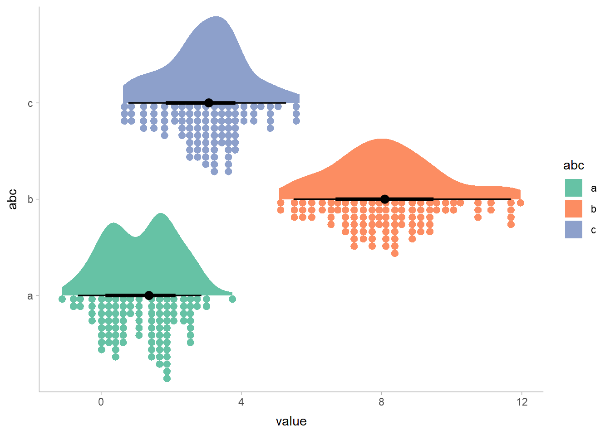

Preview of ggdist plots
ggdist is an R package that provides a flexible set of ggplot2 geoms and stats designed especially for visualizing distributions and uncertainty. It is designed for both frequentist and Bayesian uncertainty visualization, taking the view that uncertainty visualization can be unified through the perspective of distribution visualization: for frequentist models, one visualizes confidence distributions or bootstrap distributions (see vignette("freq-uncertainty-vis")); for Bayesian models, one visualizes probability distributions (see the tidybayes package, which builds on top of ggdist).
The geom_slabinterval() / stat_slabinterval() family (see vignette("slabinterval")) makes it easy to visualize point summaries and intervals, eye plots, half-eye plots, ridge plots, CCDF bar plots, gradient plots, histograms, and more:
The slabinterval family of geoms and stats
The geom_dotsinterval() / stat_dotsinterval() family (see vignette("dotsinterval")) makes it easy to visualize dot+interval plots, Wilkinson dotplots, beeswarm plots, and quantile dotplots (and combined with half-eyes, composite plots like rain cloud plots):

The geom_lineribbon() / stat_lineribbon() family (see vignette("lineribbon")) makes it easy to visualize fit lines with an arbitrary number of uncertainty bands:

All stat in ggdist also support visualizing analytical distributions and vectorized distribution data types like distributional objects or posterior::rvar() objects. This is particularly useful when visualizing uncertainty in frequentist models (see vignette("freq-uncertainty-vis")) or when visualizing priors in a Bayesian analysis.
The ggdist geoms and stats also form a core part of the tidybayes package (in fact, they originally were part of tidybayes). For examples of the use of ggdist geoms and stats for visualizing uncertainty in Bayesian models, see the vignettes in tidybayes, such as vignette("tidybayes", package = "tidybayes") or vignette("tidy-brms", package = "tidybayes").

Installation
You can install the currently-released version from CRAN with this R command:
install.packages("ggdist")Alternatively, you can install the latest development version from GitHub with these R commands:
install.packages("devtools")
devtools::install_github("mjskay/ggdist")Feedback, issues, and contributions
I welcome feedback, suggestions, issues, and contributions! I am not particularly reliable over email, though you can contact me at mjskay@northwestern.edu. On Twitter I am more reliable. If you have found a bug, please file it here with minimal code to reproduce the issue. Pull requests should be filed against the dev branch.
Citing ggdist
Matthew Kay (2023). ggdist: Visualizations of Distributions and Uncertainty. R package version 3.2.1, https://mjskay.github.io/ggdist/. DOI: 10.5281/zenodo.3879620.